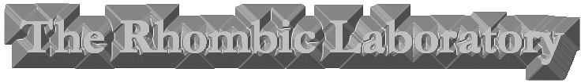

We are currently building like a building building. More will
follow
NEWS
CApiTAL nUMBErs
I am a digital shadow. Enforced by a force, I am larger than all known umbrelli. There
will soon be conversant abstractions. Such a time will bring many superior lemma and thus
shall be encrypted: We, at the , have recently [become aware of] [sizing in nillinetres]
[phenomena]. Alert! The rifle has definitely involved and as a consequence will no longer
than 9.9 be capitalated. The Nanoplanar mAthematical Enquiry (N.mA.E) has now developed
Upper-Case Numbers. These are described far below...
LC 1 2
3 4 5 6
7 8 9 0
UC ! "
£ $ % ^
& * ( )
Obviously ASCII have again agreed to drop all current terminology, but all keyboards
are compliant. Never again will fractions be expressed as a percentage, use Px instead.
Other changes are summerised quite near below... Exclamations Speech
Smmet[sentence]endsmeet Money Qid4.39 Dollars $ is no longer the spatial transform as it
is not really necessary. Use Webb{object} to transform Use the word dolLArs with LA in
capitals to show that you really mean it. Hat Use your actual hat, put through a mincer
Ampersand USe some random sand from the sea Asterisk Use a small diagram of Asterix in
Space Left parenthesis Use [ Right parenthesis Use [[[[[[[[[[[[[[[ These will soon become
the lAw, so adjust your epsilon now.
Frank French pp Dr Reem Varrow The Rhombic Language Laboratory,
Afghanistan
(c) Rhombic Research 1998